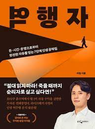

Book - Yeokheangja
대부분의 사람들은 유전자와 본성의 명령을 그대로 따르기 때문에 평범함을 벗어날 수 없다. 하지만 정작 자신은 이를 모른 채 ‘나는 달라’ 하는 자의식에 사로잡혀서 무한 합리화에 빠져 살아간다. 스스로가 얼마나 많은 정신적, 심리적 오류를 저지르는지 알지 못한 채 매일 똑같은 쳇바퀴를 돌 뿐이다. 왜 우리는 진짜 자유를 얻지 못하는가? 왜 늘 돈 이야기를 하면서도 평생 돈에 허덕이는가?
저자 역시 스무 살까지는 이런 쳇바퀴에 갇혀 있었기 때문에, 그 상황을 누구보다 잘 알았다. 자청의 첫 책 『역행자』에는 가난한 인생에서 벗어나 경제적 자유와 행복을 얻은 저자가 깨달은 인생 레벨업 치트키가 빼곡히 담겨 있다. 10대 때의 그는 외모, 돈, 공부, 그 어떤 것에서도 최하위였다. 그러던 스무 살 무렵, ‘인생에도 게임처럼 공략집이 있다’는 사실을 깨닫고 삶이 180도 바뀌기 시작한다. 200여 권의 책을 독파하며 얻은 인생의 치트키들을 활용해 창업에 연이어 성공한 것이다.
‘연봉 10억 무자본 창업가’로 유명해진 그는 2020년, 단 20개의 영상으로 10만 구독자를 넘어서며 화제를 모았으나 곧장 미련 없이 유튜브를 그만뒀다. 이후 본업인 온라인 마케팅 비즈니스를 비롯해 다방면으로 사업을 확장하고 있다. 그 사이 ‘라이프해커 자청’이라는 캐릭터와 ‘무자본 창업’이라는 개념은 사람들의 고정관념을 깨는 상징이 됐다. 자청이 찾아낸 ‘역행자의 7단계 모델’을 통해 함께 ‘인생의 추월차선’으로 향하자.

목차
프롤로그 30대 초반, 일하지 않아도 월 1억씩 버는 자동 수익이 완성되다
CHAPTER1 나는 어떻게 경제적 자유에 이르게 되었나
1막/ 3개의 벽_ 인생에서 절대 넘을 수 없을 거라 믿었던 것
2막/ 하루 2시간, 기적의 시작_ 역행자의 첫 번째 단서
3막/ 배수의 진_ “19000원이 입금되었습니다”
4막/ 행운 뒤에 숨은 것_ ‘이보다 최악의 상황이 있을까?’
5막/ 인간의 그릇_ 결국 사람은 제 그릇만큼의 돈을 모은다
피날레/ 거슬러 오르기_ 돈, 시간, 정신으로부터 완벽한 자유를 얻다
CHAPTER2 역행자 1단계_ 자의식 해체
자의식이 인간을 망치는 이유
내가 너무 소중한 사람들
자의식 해체의 3가지 단계
인생을 허비하는 특별한 방법
CHAPTER3 역행자 2단계_ 정체성 만들기
내 머리를 포맷할 수 있다면
정체성 소프트웨어를 설치하기
사람들은 자기 마음의 상처를 핥기에 여념이 없다
CHAPTER4 역행자 3단계_ 유전자 오작동
뇌는 어떻게 진화했을까
진화의 목적은 완벽함이 아니라 생존이다
유전자 오작동을 이기는 역행자의 사고방식
오작동을 극복하고 30억을 취하다
CHAPTER5 역행자 4단계_ 뇌 자동화
뇌를 복리로 성장시킨다면
뇌 최적화 1단계_ 22전략
뇌 최적화 2단계_ 오목 이론
뇌 최적화 3단계_ 뇌를 증폭시키는 3가지 방법
CHAPTER6 역행자 5단계_ 역행자의 지식
기버 이론_ 역행자는 1을 받으면 2를 준다
확률 게임_ 역행자는 확률에만 베팅한다
타이탄의 도구_ 유전자에 각인된 장인 정신을 역행하라
메타인지_ 주관적인 판단은 순리자들의 전유물이다
실행력 레벨과 관성
CHAPTER7 역행자 6단계_ 경제적 자유를 얻는 구체적 루트
돈을 버는 근본 원리
경제적 자유라는 성을 함락시키는 방법
당신이 직장인이든 백수든 열아홉이든 쉰이든
경제적 자유를 위한 5가지 공부법
젊은 부자들은 어떻게 공부했을까
경제적 자유로 가는 알고리즘 설계
CHAPTER8 역행자 7단계_ 역행자의 쳇바퀴
에필로그 역행자가 되어 완벽한 자유를 누려라
참고 나를 역행자로 만들어준 책 리스트
특별부록 곧바로 돈 버는 무자본 창업 아이템